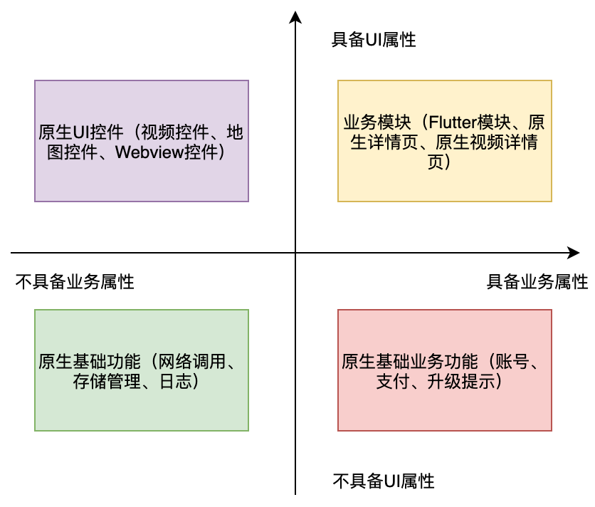
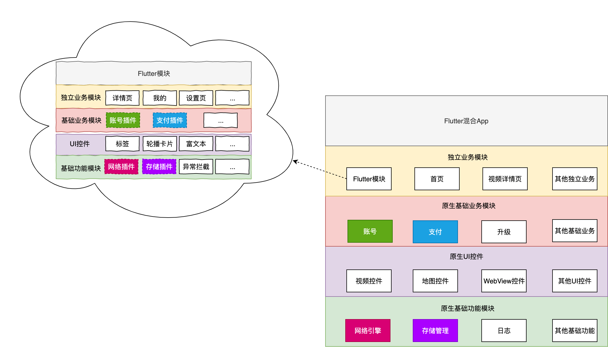
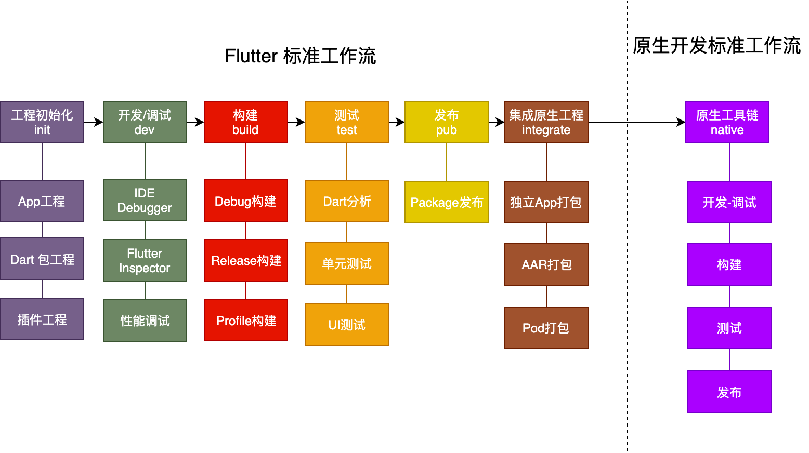
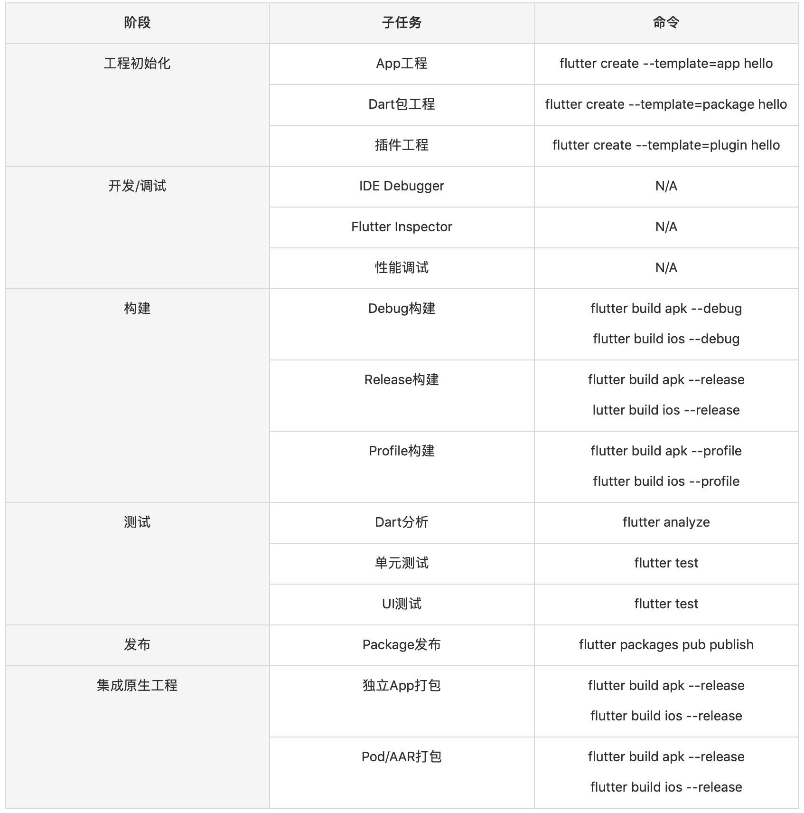

- 00 开篇词 为什么每一位大前端从业者都应该学习Flutter？.md
- 01 预习篇 · 从0开始搭建Flutter工程环境.md
- 02 预习篇 · Dart语言概览.md
- 03 深入理解跨平台方案的历史发展逻辑.md
- 04 Flutter区别于其他方案的关键技术是什么？.md
- 05 从标准模板入手，体会Flutter代码是如何运行在原生系统上的.md
- 06 基础语法与类型变量：Dart是如何表示信息的？.md
- 07 函数、类与运算符：Dart是如何处理信息的？.md
- 08 综合案例：掌握Dart核心特性.md
- 09 Widget，构建Flutter界面的基石.md
- 10 Widget中的State到底是什么？.md
- 11 提到生命周期，我们是在说什么？.md
- 12 经典控件（一）：文本、图片和按钮在Flutter中怎么用？.md
- 13 经典控件（二）：UITableView_ListView在Flutter中是什么？.md
- 14 经典布局：如何定义子控件在父容器中排版的位置？.md
- 15 组合与自绘，我该选用何种方式自定义Widget？.md
- 16 从夜间模式说起，如何定制不同风格的App主题？.md
- 17 依赖管理（一）：图片、配置和字体在Flutter中怎么用？.md
- 18 依赖管理（二）：第三方组件库在Flutter中要如何管理？.md
- 19 用户交互事件该如何响应？.md
- 20 关于跨组件传递数据，你只需要记住这三招.md
- 21 路由与导航，Flutter是这样实现页面切换的.md
- 22 如何构造炫酷的动画效果？.md
- 23 单线程模型怎么保证UI运行流畅？.md
- 24 HTTP网络编程与JSON解析.md
- 25 本地存储与数据库的使用和优化.md
- 26 如何在Dart层兼容Android_iOS平台特定实现？（一）.md
- 27 如何在Dart层兼容Android_iOS平台特定实现？（二）.md
- 28 如何在原生应用中混编Flutter工程？.md
- 29 混合开发，该用何种方案管理导航栈？.md
- 30 为什么需要做状态管理，怎么做？.md
- 31 如何实现原生推送能力？.md
- 32 适配国际化，除了多语言我们还需要注意什么_.md
- 33 如何适配不同分辨率的手机屏幕？.md
- 34 如何理解Flutter的编译模式？.md
- 35 Hot Reload是怎么做到的？.md
- 36 如何通过工具链优化开发调试效率？.md
- 37 如何检测并优化Flutter App的整体性能表现？.md
- 38 如何通过自动化测试提高交付质量？.md
- 39 线上出现问题，该如何做好异常捕获与信息采集？.md
- 40 衡量Flutter App线上质量，我们需要关注这三个指标.md
- 41 组件化和平台化，该如何组织合理稳定的Flutter工程结构？.md
- 42 如何构建高效的Flutter App打包发布环境？.md
- 43 如何构建自己的Flutter混合开发框架（一）？.md
- 44 如何构建自己的Flutter混合开发框架（二）？.md
- 特别放送 温故而知新，与你说说专栏的那些思考题.md
- 结束语 勿畏难，勿轻略.md
43 如何构建自己的Flutter混合开发框架（一）？
你好，我是陈航。在本次课程的最后一个主题里，我来和你聊聊如何设计自己的Flutter混合开发框架。
所谓混合开发，是指在App的整体架构继续使用原生技术栈的基础上，将Flutter运行环境嵌入到原生App工程中：由原生开发人员为Flutter运行提供宿主容器及基础能力支撑，而Flutter开发人员则负责应用层业务及App内大部分渲染工作。
这种开发模式的好处十分明显。对于工程师而言，跨平台的Flutter框架减少了对底层环境的依赖，使用完整的技术栈和工具链隔离了各个终端系统的差异，无论是Android、iOS甚至是前端工程师，都可以使用统一而标准化的能力进行业务开发，从而扩充了技能栈。而对于企业而言，这种方式不仅具备了原生App良好的用户体验，以及丰富的底层能力，还同时拥有了跨平台技术开发低成本和多端体验一致性的优势，直接节省研发资源。
那么，在原生工程中引入Flutter混合开发能力，我们应该如何设计工程架构，原生开发与Flutter开发的工作模式又是怎样的呢？
接下来，在今天的分享中，我会着重为你介绍这两个主题设计思路和建设方向；而在下一次分享中，我则会通过一个实际的案例，与你详细说明在业务落地中，我们需要重点考虑哪些技术细节，这样你在为自己的原生工程中设计混合开发框架时也就有迹可循了。
混合开发架构
在第41篇文章中，我与你介绍了软件功能分治的两种手段，即组件化和平台化，以及如何在满足单向依赖原则的前提下，以分层的形式将软件功能进行分类聚合的方法。这些设计思想，能够让我们在设计软件系统架构时，降低整体工程的复杂性，提高App的可扩展性和可维护性。
与纯Flutter工程能够以自治的方式去分拆软件功能、管理工程依赖不同，Flutter混合工程的功能分治需要原生工程与Flutter工程一起配合完成，即：在Flutter模块的视角看来，一部分与渲染相关的基础能力完全由Flutter代码实现，而另一部分涉及操作系统底层、业务通用能力部分，以及整体应用架构支撑，则需要借助于原生工程给予支持。
在第41篇文章中，我们通过四象限分析法，把纯Flutter应用按照业务和UI分解成4类。同样的，混合工程的功能单元也可以按照这个分治逻辑分为4个维度，即不具备业务属性的原生基础功能、不具备业务属性的原生UI控件、不具备UI属性的原生基础业务功能和带UI属性的独立业务模块。

图1 四象限分析法
从图中可以看到，对于前3个维度（即原生UI控件、原生基础功能、原生基础业务功能）的定义，纯Flutter工程与混合工程并无区别，只不过实现方式由Flutter变成了原生；对于第四个维度（即独立业务模块）的功能归属，考虑到业务模块的最小单元是页面，而Flutter的最终呈现形式也是独立的页面，因此我们把Flutter模块也归为此类，我们的工程可以像依赖原生业务模块一样直接依赖它，为用户提供独立的业务功能。
我们把这些组件及其依赖按照从上到下的方式进行划分，就是一个完整的混合开发架构了。可以看到，原生工程和Flutter工程的边界定义清晰，双方都可以保持原有的分层管理依赖的开发模式不变。

图2 Flutter混合开发架构
需要注意的是，作为一个内嵌在原生工程的功能组件，Flutter模块的运行环境是由原生工程提供支持的，这也就意味着在渲染交互能力之外的部分基础功能（比如网络、存储），以及和原生业务共享的业务通用能力（比如支付、账号）需要原生工程配合完成，即原生工程以分层的形式提供上层调用接口，Flutter模块以插件的形式直接访问原生代码宿主对应功能实现。
因此，不仅不同归属定义的原生组件之前存在着分层依赖的关系，Flutter模块与原生组件之前也隐含着分层依赖的关系。比如，Flutter模块中处于基础业务模块的账号插件，依赖位于原生基础业务模块中的账号功能；Flutter模块中处于基础业务模块的网络插件，依赖位于原生基础功能的网络引擎。
可以看到，在混合工程架构中，像原生工程依赖Flutter模块、Flutter模块又依赖原生工程这样跨技术栈的依赖管理行为，我们实际上是通过将双方抽象为彼此对应技术栈的依赖，从而实现分层管理的：即将原生对Flutter的依赖抽象为依赖Flutter模块所封装的原生组件，而Flutter对原生的依赖则抽象为依赖插件所封装的原生行为。
Flutter混合开发工作流
对于软件开发而言，工程师的职责涉及从需求到上线的整个生命周期，包含需求阶段->方案阶段->开发阶段->发布阶段->线上运维阶段。可以看出，这其实就是一种抽象的工作流程。
其中，和工程化关联最为紧密的是开发阶段和发布阶段。我们将工作流中和工程开发相关的部分抽离，定义为开发工作流，根据生命周期中关键节点和高频节点，可以将整个工作流划分为如下七个阶段，即初始化->开发/调试->构建->测试->发布->集成->原生工具链：

图3 Flutter混合开发工作流
前6个阶段是Flutter的标准工作流，最后一个阶段是原生开发的标准工作流。
可以看到，在混合开发工作模式中，Flutter的开发模式与原生开发模式之间有着清晰的分工边界：Flutter模块是原生工程的上游，其最终产物是原生工程依赖。从原生工程视角看，其开发模式与普通原生应用并无区别，因此这里就不再赘述了，我们重点讨论Flutter开发模式。
对于Flutter标准工作流的6个阶段而言，每个阶段都会涉及业务或产品特性提出的特异性要求，技术方案的选型，各阶段工作成本可用性、可靠性的衡量，以及监控相关基础服务的接入和配置等。
每件事儿都是一个固定的步骤，而当开发规模随着文档、代码、需求增加时，我们会发现重复的步骤越来越多。此时，如果我们把这些步骤像抽象代码一样，抽象出一些相同操作，就可以大大提升开发效率。
优秀的程序员会发掘工作中的问题，从中探索提高生产力的办法，而转变思维模式就是一个不错的起点。以持续交付的指导思想来看待这些问题，我们希望整体方案能够以可重复、可配置化的形式，来保障整个工作流的开发体验、效率、稳定性和可靠性，而这些都离不开Flutter对命令行工具支持。
比如，对于测试阶段的Dart代码分析，我们可以使用flutter analyze命令对代码中可能存在的语法或语义问题进行检查；又比如，在发布期的package发布环节，我们可以使用flutter packages pub publish –dry-run命令对待发布的包进行发布前检查，确认无误后使用去掉dry-run参数的publish命令将包提交至Pub站点。
这些基本命令对各个开发节点的输入、输出以及执行过程进行了抽象，熟练掌握它们及对应的扩展参数用法，我们不仅可以在本地开发时打造一个易用便捷的工程开发环境，还可以将这些命令部署到云端，实现工程构建及部署的自动化。
我把这六个阶段涉及的关键命令总结为了一张表格，你可以结合这张表格，体会落实在具体实现中的Flutter标准工作流。
表1 Flutter标准工作流命令

总结
对于Flutter混合开发而言，如何处理好原生与Flutter之间的关系，需要从工程架构与工作模式上定义清晰的分工边界。
在架构层面，将Flutter模块定义为原生工程的独立业务层，以原生基础业务层向Flutter模块提供业务通用能力、原生基础能力层向Flutter模块提供基础功能支持这样的方式去分层管理依赖。
在工作模式层面，将作为原生工程上游的Flutter模块开发，抽象为原生依赖产物的工程管理，并提炼出对应的工作流，以可重复、配置化的命令行方式对各个阶段进行统一管理。
可以看到，在原生App工程中引入Flutter运行环境，由原生开发主做应用架构和基础能力赋能、Flutter开发主做应用层业务的混合开发协作方式，能够综合原生App与Flutter框架双方的特点和优势，不仅可以直接节省研发资源，也符合目前行业人才能力模型的发展趋势。
思考题
除了工程依赖之外，我们还需要管理Flutter SDK自身的依赖。考虑到Flutter SDK升级非常频繁，对于多人协作的团队模式中，如何保证每个人使用的Flutter SDK版本完全一致呢？
欢迎你在评论区给我留言分享你的观点，我会在下一篇文章中等待你！感谢你的收听，也欢迎你把这篇文章分享给更多的朋友一起阅读。
© 2019 - 2023 Liangliang Lee. Powered by gin and hexo-theme-book.